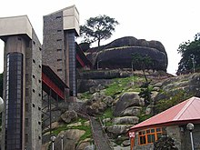

Abeokuta is the capital city of Ogun State in southwest Nigeria. It is situated on the east bank of the Ogun River, near a group of rocky outcrops in a wooded savanna; 77 kilometres north of Lagos by railway, or 130 kilometres by water. As of 2006, Abeokuta and the surrounding area had a population of 449,088.
Climb the legendary Olumo Rock famed as the founding site of Abeokuta. A massive outcrop of granite rock that towers above the city, the rock served as a natural fortress for the Egba people during the 19th century. It offered a great vantage point during the tribal wars and helped the locals win the wars.

MANY CONSIDER ABEOKUTA TOWN AN INGRESS BETWEEN THE PHYSICAL AND THE SPIRITUAL WORLD WITH HER PAST SHRINES ALONGSIDE ANCIENT CACHES MIXED WITH A DOMINATING AND TOWERING PRESENCE OF OLOMU ROCK.
Some tourist attractions in this ancient city include:
- Olumo Rock
- President Olusegun Obasanjo Library
- June 12 Cultural Center
- OOPL Wildlife Park
Big names that have come out of the city:
- Professor Wole Soyinka
- Fela Kuti
- Funmilayo Ransome Kuti
- Simeon Adebo